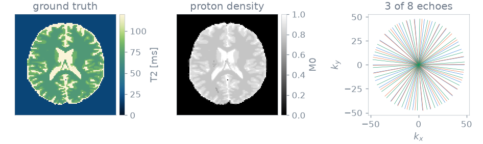
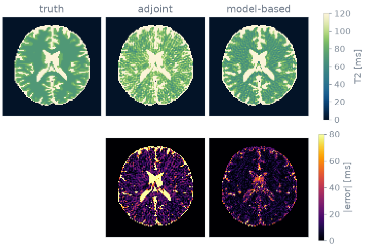

Note
Go to the end to download the full example code or to run this example in your browser via Binder.
Nonlinear inversion from k-space#
In this Application you reconstruct T2 maps directly from k-space, with the signal model inside the forward operator, and compare the result with gridding followed by a fit.
The forward operator is the chain
of sampling \(P\), Fourier encoding \(\mathcal{F}\), coil sensitivities
\(C\) and the signal model \(M\) [1]. Only \(M\) changes with the
sequence, and it is the only factor blochsim supplies: a
ModelOperator wraps any simulator as \(M\). The encoding
and the Gauss-Newton solver come from
bartorch. The problem is nonlinear
in the maps, so it needs a starting guess and an outer Gauss-Newton loop. In
exchange the model can have any number of parameters, where a linear subspace
would have to span the product of their ranges.
Prerequisites: Course lessons 1. Your first simulation and 3. Custom signal model.
Setup#
blochsim simulates the signal. bartorch provides the non-uniform Fourier transform, the nonlinear operator that carries the signal model into BART, and the iteratively regularized Gauss-Newton solver.
import time
import numpy as np
import torch
from bartorch import linop, nlop
from blochsim import ModelOperator
from blochsim.estimators import DictionaryMatcher
from blochsim.simulators import MultiEchoSimulator
The experiment is a 96 x 96 matrix read as 16 radial spokes of 192 samples per echo, with 8 echoes. The baseline estimator uses a rank-3 temporal basis.
SIZE = 96
ECHOES = 8
SPOKES = 16
SAMPLES = 192
RANK = 3
STEPS = 8 # Gauss-Newton iterations
CG_ITERATIONS = 20 # conjugate-gradient iterations per linearized problem
ALPHA = 1e-3 # initial damping, halved at every iteration
# The simulation and the transform run on a GPU when one is available.
device = "cuda" if torch.cuda.is_available() else "cpu"
Phantom#
The phantom is BrainWeb subject 0, slice 90, resampled to 96 x 96. BrainWeb gives fuzzy tissue memberships, not labels. Weighting the tabulated T2 and proton density of each tissue by its membership gives maps in which mixed voxels lie between the pure tissues, known everywhere.
Sequence and sampling#
The sequence is a multi-echo spin echo with eight echoes from 10 to 150 ms. Simulating it over the T2 map gives one image per echo, scaled by the proton density:
TE = torch.linspace(10.0, 150.0, ECHOES)
simulator = MultiEchoSimulator(TE=TE)
images = (
torch.as_tensor(simulator.to(device).simulate(T2=T2_true)).to(torch.complex64)
* M0_true.to(torch.complex64)[..., None]
)
Each echo is sampled by 16 radial spokes, rotated by the golden angle from the echo before, so the echoes together cover k-space more evenly than any one does. 16 spokes across a 96-sample matrix is about ninefold undersampling, which is where the reconstructions differ.
The trajectory is (echoes, spokes, samples, 2) in grid units. Each echo
has its own bartorch.linop.NUFFT along its own spokes, and
bartorch.linop.block_diag() stacks them into one operator from the
(echoes, y, x) images to the (echoes, spokes, samples) k-space:
golden = torch.pi * (3.0 - 5.0**0.5)
angle = golden * torch.arange(ECHOES * SPOKES).reshape(ECHOES, SPOKES, 1)
radius = torch.linspace(-SIZE / 2, SIZE / 2, SAMPLES + 1)[:-1]
trajectory = torch.stack(
(radius * torch.cos(angle), radius * torch.sin(angle)), dim=-1
).to(device)
encoding = linop.block_diag(
[
linop.NUFFT(trajectory[echo : echo + 1], image_shape=(1, SIZE, SIZE))
for echo in range(ECHOES)
]
)
kspace = encoding(images.movedim(-1, 0).contiguous())
Gridding is the adjoint after a ramp density compensation. Scale the k-space so that the gridded image peaks at one; the damping weights below are then numbers about the model, not about the receiver gain:

16 spokes per echo: 9x undersampled
The maps are what both reconstructions below recover, and the spokes are all that is measured of them.
Gridding baseline#
The baseline reconstructs the eight images and then fits them. The fit needs an estimator, here a dictionary match over a rank-3 temporal basis, which holds essentially all of an eight-echo exponential decay. The nonlinear reconstruction has no such step, because its result is the maps.
grid = torch.linspace(20.0, 400.0, 500)
mapping = DictionaryMatcher(simulator).fit(T2=grid, M0=1.0, rank=RANK, seed=0)
adjoint = mapping(gridded)["T2"]
rank 3 of 8 keeps 0.999992 of the signal
adjoint per echo 0.0s T2 error 27.9 ms (20.3%)
tensor([[ 48.9379, 20.7615, 32.1844, ..., 164.6894, 400.0000, 400.0000],
[ 86.2525, 54.2685, 61.8838, ..., 400.0000, 400.0000, 400.0000],
[400.0000, 90.8216, 39.0381, ..., 400.0000, 120.5210, 84.7295],
...,
[400.0000, 400.0000, 305.5711, ..., 23.0461, 43.6072, 27.6152],
[ 78.6373, 84.7295, 190.5812, ..., 20.0000, 39.0381, 39.7996],
[ 41.3226, 361.9239, 223.3266, ..., 21.5230, 23.0461, 20.0000]])
Gridding is the adjoint with density compensation. 16 spokes of 192 samples are 3072 measurements per echo against 9216 unknowns, so each echo alone is underdetermined and iterating per echo does not reduce the error. The improvement has to come from a constraint across the echoes, which is the signal model.
Signal model#
The model stays in the forward operator and the maps are solved for against k-space. You declare two things:
the unknowns:
T2and the complex amplitude the operator carries with it, which combines proton density and receive phase;the range of T2. The bound is enforced by solving for a transformed variable, so no iterate leaves it. This matters more here than in a voxelwise fit, because the model is evaluated in every voxel to predict every k-space sample, and one unphysical voxel corrupts the whole residual.
operator = ModelOperator(simulator.to(device), "T2", bounds={"T2": (20.0, 400.0)})
bartorch.nlop.ModelOperator carries it into BART as a nonlinear
operator from (channels, y, x) maps to (echoes, y, x) images. The
amplitude starts from the first gridded echo, which costs nothing and makes the
first Gauss-Newton step well conditioned:
Gauss-Newton solve#
The forward operator is the composition encoding @ M. Each iteration of
bartorch.nlop.IRGNM linearizes it at the current maps, solves the
linearized least-squares problem by conjugate gradients and steps, then halves
the damping. blochsim provides the model and its derivative; the loop and the
encoding are BART’s.
solver = nlop.IRGNM(iterations=STEPS, alpha=ALPHA, cg_maxiter=CG_ITERATIONS)
found = solver(kspace, encoding @ M, x0=initial)
modelled = M.split(found)["T2"]
model-based 4.6s T2 error 11.6 ms ( 9.4%)
tensor([[100.6794, 100.7537, 101.6519, ..., 101.3361, 102.0932, 98.8389],
[100.9799, 98.9173, 97.5988, ..., 101.4138, 98.1100, 95.5856],
[101.0738, 100.0331, 98.4172, ..., 105.0913, 105.0260, 104.3496],
...,
[101.5714, 101.8706, 101.8607, ..., 100.2649, 102.2966, 100.4587],
[100.5085, 100.6379, 101.2384, ..., 99.1693, 104.6259, 106.5130],
[101.0148, 100.9465, 101.3507, ..., 94.5401, 99.0092, 104.1169]])
found holds the solved variables and M.split separates them into named
maps. No fit follows.
Time and memory#
Each conjugate-gradient step applies the Jacobian and its adjoint once. Each product is one application of the encoding operator and one of the model. Timing the four shows which part a faster reconstruction has to speed up.
point = operator.initial((SIZE, SIZE), T2=100.0).to(device)
tangent = torch.randn_like(point)
predicted = operator.A_jvp(point, tangent)
adjoint_image = encoding.H(kspace).movedim(0, -1)
per conjugate-gradient step, 3 channels solved for:
model J v 3.7 ms
model J^H v 1.5 ms
encoding A 1.0 ms
encoding A^H 1.1 ms
the Jacobian this avoids holding: 1.7 MiB, against 0.6 MiB for a signal
The products do not build the Jacobian. Its blocks are voxels x channels x contrasts, where a signal is voxels x contrasts, so avoiding it saves the channel count times the signal size at every iteration.
Maps#
The T2 maps use a perceptually uniform colormap reserved for T2 [2].

Alternative signal model#
The model is the only part that names a relaxation time, and it is an ordinary
Simulator, the object used in the fitting and design
Applications. Water-fat separation, T2* with a field map or a Look-Locker
inversion recovery each require a different simulator. The operator, the loop
and the encoding are unchanged.
References#
Specification#
What this Application did, stated the way you would ask an agent for it:
With blochsim and bartorch, simulate an 8-echo multi-echo spin echo (TE 10
to 150 ms) on a BrainWeb T2 phantom of 96 x 96 voxels, sampled by 16
golden-angle radial spokes per echo. Reconstruct T2 two ways: gridding
followed by a dictionary match, and a blochsim ModelOperator over the
simulator with T2 bounded to 20-400 ms, wrapped as bartorch's
nlop.ModelOperator under linop.NUFFT and solved by nlop.IRGNM from a T2 of
100 ms.
Report time and mean T2 error over the brain, the time of each Jacobian
product, and the size of the Jacobian that the operator avoids storing.
Total running time of the script: (0 minutes 5.558 seconds)